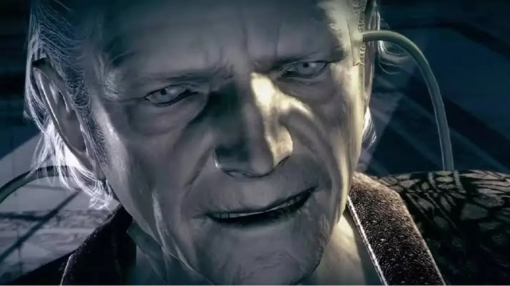

8 de octubre de 2026El próximo contenido argumental de Resident Evil Requiem todavía permanece bajo secreto, pero una declaración de su guionista dejó escapar un detalle importante. Haris Orkin confirmó que la expansión continuará explorando la historia de Oswell E. Spencer, uno de los personajes fundamentales de la mitología de Resident Evil.
1 de octubre de 2026Capcom reveló que lleva varios años preparando el momento en que la línea de remakes de Resident Evil alcance cronológicamente a los juegos modernos. El productor Jun Takeuchi explicó que la compañía trabaja con ambas líneas de la franquicia en paralelo y que ya existe una estrategia para hacerlas converger.